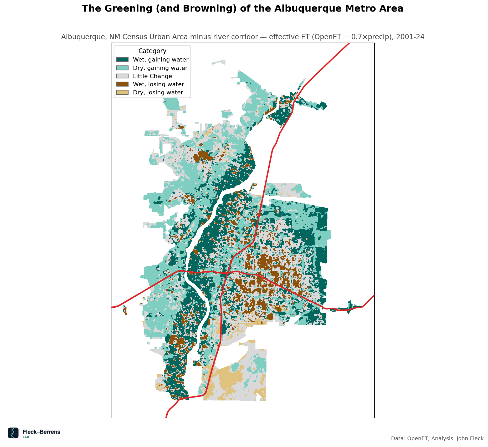

The Greening (and Browning) of the Albuquerque Metro Area — methodology#
This note summarizes how the quadrant-map replication notebook
(notebooks/quadrant_map/quadrant_map_replication.ipynb) classifies the Albuquerque metro area by
water-use trend. The notebook is the source of truth; this is a plain-language overview.
Question#
Where across the Albuquerque metro area is water use (evapotranspiration net of precipitation) rising, and where is it falling?
Published figure#
{kind=link}

Method#
Water-use metric. Effective ET = OpenET ensemble evapotranspiration − 0.7 × GRIDMET precipitation, both pulled from Google Earth Engine at 30 m resolution. This nets out rainfall from total water loss, leaving a proxy for water use beyond what precipitation alone supplies.
Baseline. Mean annual effective ET, 2001–2005.
Trend. Per-pixel linear regression slope of annual effective ET, 2001–2024 (mm/yr²).
Smoothing. Both rasters get a NaN-aware Gaussian filter (σ = 2 px, ≈ 60 m) before classifying, so the map reads as legible patches instead of pixel-level noise.
Classification. Baseline median split (wet vs. dry, relative to this AOI) × trend sign (gaining vs. losing), with the bottom tercile of |trend| pulled out as a “Little Change” band. Five classes result: Wet/gaining, Dry/gaining, Little Change, Wet/losing, Dry/losing.
The AOI#
The published figure uses the Census Bureau’s “Albuquerque, NM Urban Area” (GEOID 01171) minus a
narrow river-corridor strip (the levee-to-levee channel), so the open-water/riverbed ET signal
doesn’t get read as a residential land-use trend.
The replication notebook uses the full Urban Area polygon, without the river-corridor subtraction — that corridor shapefile was custom-digitized by a research collaborator and isn’t publicly redistributable. This is a documented simplification: expect small differences right along the river channel, with the metro-wide pattern otherwise matching closely.
Key caveats#
Relative, not absolute. The median and tercile thresholds are derived from this AOI’s own pixel distribution. The same pixel could classify differently over a different or differently-shaped AOI — class assignments are not comparable across geographies.
The 0.7× precipitation coefficient is a modeling choice, not a locally calibrated physical constant. It follows the FAO rule-of-thumb effective-rainfall fraction for arid regions with moderate-intensity rainfall (Allen et al., 1998; Brouwer & Heibloem, 1986) rather than a site-calibrated estimate. A different coefficient would shift the effective-ET baseline (and, to a lesser degree, the trend).
OpenET resolution and uncertainty. OpenET is itself an ensemble of six remote-sensing ET models, well-validated at agricultural field scale but carrying more uncertainty over heterogeneous urban land cover. Read this as a neighborhood-scale pattern, not a parcel- or lot-level measurement.
A fresh run will not exactly match the published figure — beyond the AOI simplification above, OpenET occasionally revises its ensemble methodology and underlying model versions.
References#
Allen, R. G., Pereira, L. S., Raes, D., & Smith, M. (1998). Crop evapotranspiration: Guidelines for computing crop water requirements (FAO Irrigation and Drainage Paper No. 56). Food and Agriculture Organization of the United Nations. https://openknowledge.fao.org/handle/20.500.14283/cd6621en
Brouwer, C., & Heibloem, M. (1986). Irrigation water management: Irrigation water needs (Training Manual No. 3). Food and Agriculture Organization of the United Nations. https://www.fao.org/4/s2022e/s2022e00.htm